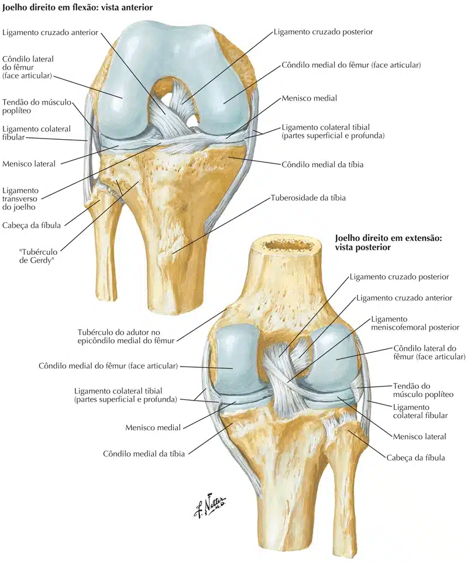
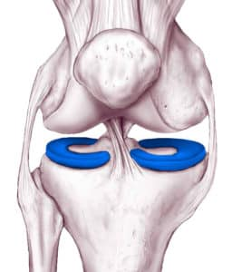

Os meniscos da articulação do joelho são lâminas com formato de meia-lua na face articular da tíbia e absorve o choque, pois os meniscos em suas margens externas são espessos e se afinam até se formarem margens mais finas, porém não estão fixadas no interior da articulação, mas estão fixados em suas extremidades na área intercondilar da tíbia, por terem formato de cunha em corte transversal e nas margens externas fixam-se à capsula articular do joelho.
NETTER: Frank H. Netter Atlas De Anatomia Humana. 7 ed. Rio de Janeiro: Elsevier, 2021.
Os ligamentos coronários da cápsula articular se estendem entre as margens dos meniscos e a maior parte dos côndilos da tíbia e durante o movimento do joelho, o ligamento transverso irá se unir as margens anteriores dos meniscos, cruzando a área intercondilar anterior, fixando os meniscos um ao outro.
Os meniscos lateral e medial possuem um corno anterior e um corno posterior, os cornos anteriores são conectados por um ligamento transverso.
A fixação dos meniscos ocorre através de seus cornos que se aderem à tíbia graças a inserções fibrosas, sua periferia se fixa em parte à cápsula.
Os meniscos são estruturas constituídas por fibras colágenas, o medial em forma de “C” e o lateral em forma de “O”, estão dispostas longitudinalmente na parte periférica do menisco que se ancora na tíbia, e, de forma radial que partem do rim meniscal se estendendo da zona livre do menisco até sua margem central.

NETTER: Frank H. Netter Atlas De Anatomia Humana. 7 ed. Rio de Janeiro: Elsevier, 2021.
Movimentos dos meniscos
Embora o movimento de rolamento dos côndilos do fêmur durante a flexão e a extensão seja limitado (convertido em rotação) pelos ligamentos cruzados, há algum rolamento, e o ponto de contato entre o fêmur e a tíbia move-se posteriormente com a flexão e retorna anteriormente com a extensão.
Além disso, durante a rotação do joelho, um côndilo femoral move-se anteriormente sobre o côndilo da tíbia correspondente enquanto o outro côndilo do fêmur move-se posteriormente, girando em torno dos ligamentos cruzados.
Os meniscos devem ser capazes de migrar sobre o platô tibial quando os pontos de contato entre o fêmur e a tíbia se modificam.
NETTER: Frank H. Netter Atlas De Anatomia Humana. 7 ed. Rio de Janeiro: Elsevier, 2021.
Os meniscos têm como função
Aumentar a congruência entre as superfícies articulares do fêmur e da tíbia, participar na sustentação de peso através da articulação, atuar como amortecedor, ajudando na lubrificação e participar no mecanismo de trancamento.
Portanto são de 50 a 60% responsáveis em carregar a carga do corpo através do joelho.

O suprimento vascular dos meniscos provém da cápsula articular, que recebem sua nutrição a partir do líquido sinovial, mas também por difusão dos plexos vasculares, que estão presentes nos tecidos moles adjacentes nas inserções no osso ou cápsula fibrosa.
A vascularização dos meniscos é dividida em três áreas:
A área vermelha-vermelha que apresenta suprimento sanguíneo na parte capsular e no próprio menisco;
A área vermelha-branca possui suprimento periférico;
E a parte central é vascular e a área branca-branca não apresenta suprimento vascular.